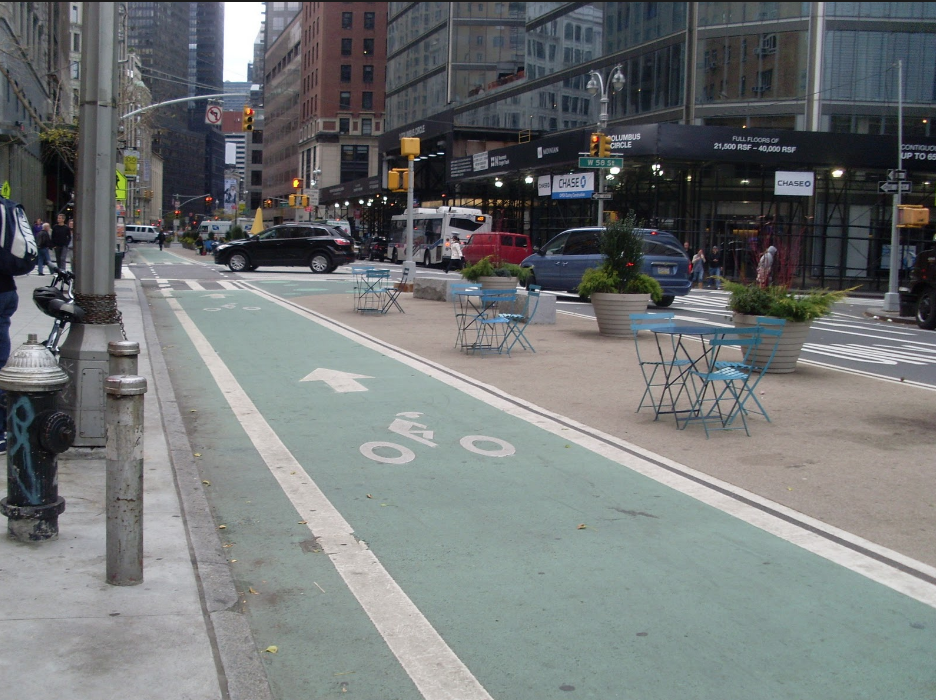
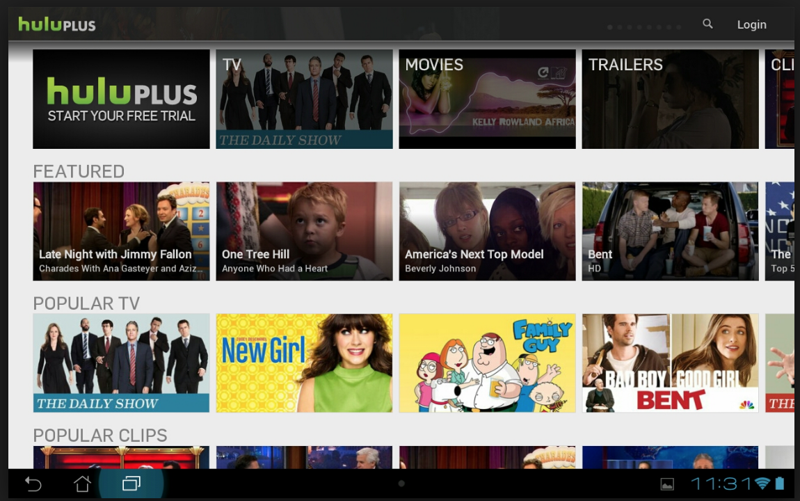

By Tuongvi Diep
Getting around New York is already hard enough- but imagine riding a bike while trying to dodge cars. That's why bike lanes in New York are so helpful. There's a designated path for bikers, you're not riding in the same lane as the cars. "The bike lane is near the parked cars so it creates a barrier between the bikers and the car, "I feel much safer with the bike lanes, said Ben Burge." The bike lanes are also painted green so that it stands out. It makes it much easier for the bikers and the cars to see the lanes and for the cars to watch out for the bikers. Ben also finds the bikers to be very respectful. "Everyone has a destination to be, they are mindful of others around them."
Hulu is a streaming service that provides hundreds of tv shows and movies. While it is popular, Ben is not too fond of its user design. When you open Hulu, tv shows and movies are shown in a slide show like display with categories like "Featured," "Popular TV," "Popular Clips," and more. "I can't stand that every time I log in it takes me to new content, I feel they're trying to push new content on me." Ben finds this to be very distracting and overwhelming " I just want to pick off where I left off," he said. He also said at time, he gets intimidated by Hulu's design. Even though it's supposed to be user friendly he says it is too much. There are lots of shows being shown on the screen so sometimes it's hard to pick what you want to watch.